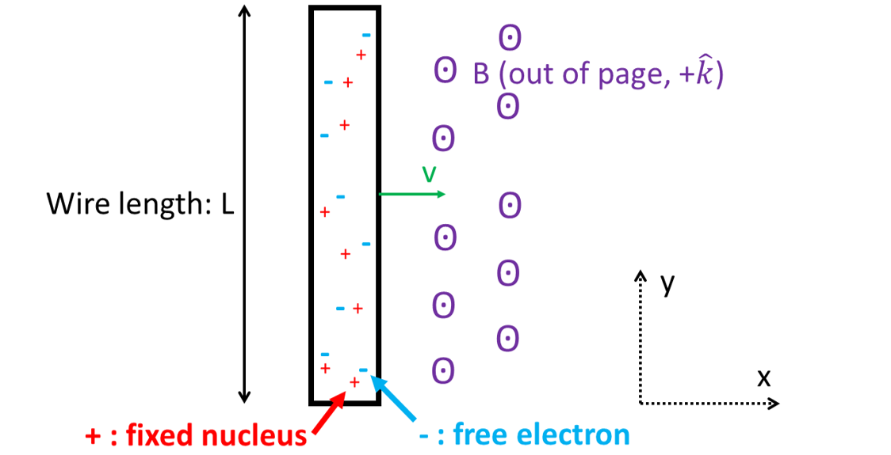
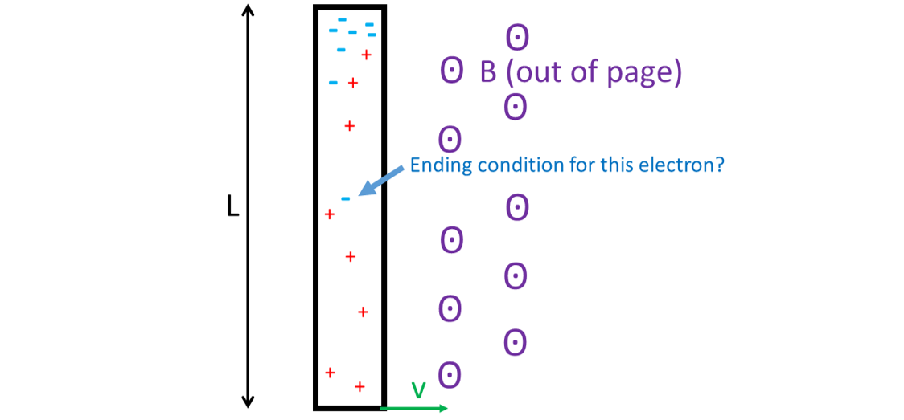
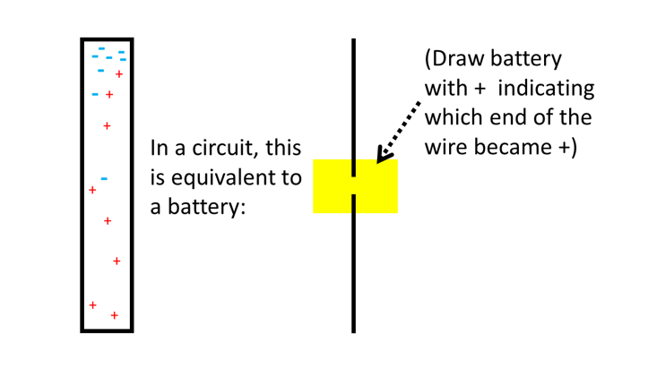
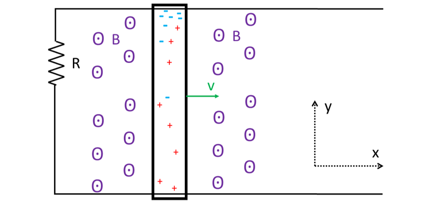
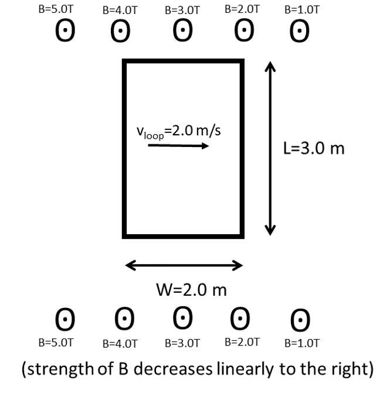
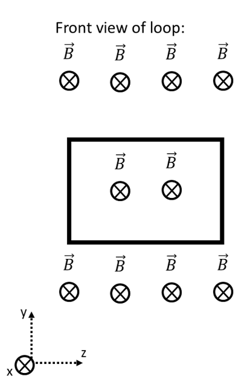
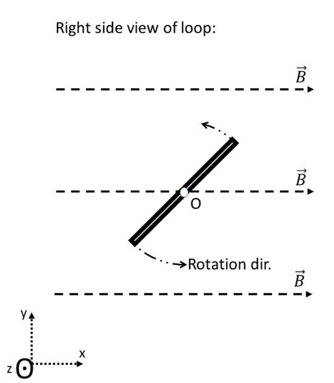
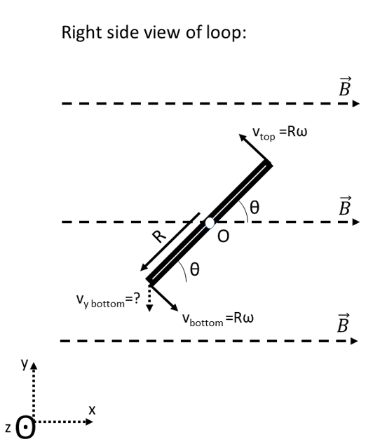

Motional EMF
1. Derivation of Motional EMF.
If a current \(I\) creates a magnetic field \(B\text{,}\) can a magnetic field \(B\) create a current \(I\text{?}\) Here, we will investigate how a magnetic field can force electrons to move through a wire.
1. Imagine a box is initially uniformly filled with electrons that are free to move (in the real world, this box would be a metal wire). Thinking about just one electron, how should the magnetic field B be oriented with respect to the velocity v of the electron in order to get the maximum amount of magnetic force to push on the electron: v parallel to B, or v perpendicular to B?
The angle between v and B that maximizes F would be: \(\ \ \binom{\ }{\_\_\_\_\_\_\_\_\_\_\_\_\_\_\_\_\_}\)
2. Here is a picture of the metal wire with electrons. The wire has a given length L, and is moving to the right with given velocity v in a given magnetic field B:

3. Let’s focus on just one of the electrons and figure out the magnetic force vector on it:
The formula that tells us the magnetic force vector for this electron is:
\begin{equation*}
\overrightarrow{F} = \ \binom{\ }{\_\_\_}\ \overrightarrow{v} \times \ \binom{\ }{\_\_\_}\
\end{equation*}
Using RH rule, the magnetic force on the electron must be in the \(\ \binom{\ }{\_\_\_\_\_\_\_\_\_\_\_\_\_\_\_\_\_}\ \)direction (because the electron charge has a minus sign in it that multiplies into the direction of the cross product).
Now that we’ve found the direction of \(\overrightarrow{F}\text{,}\) the magnitude of \(\overrightarrow{F}\) is:
\begin{equation*}
\left| \overrightarrow{F} \right| = |q||v||B|\sin{\mathrm{\Delta}\theta}
\end{equation*}
Let’s put in the symbol for the charge of the electron:
\begin{equation*}
\left| \overrightarrow{F} \right| = \left| \ \binom{\ }{\_\_\_}\ \right||v||B|\sin{\mathrm{\Delta}\theta}
\end{equation*}
4. Now, we need to figure out when this process of electrons being pushed towards the top of the box will end. Once a fair number of electrons have been pushed to the top, the box looks like:

Thinking about the electron that hasn’t yet made it to the top, will the top of the wire attract it, or repel it?
Now that we know the directions of the forces, let’s draw a free-body diagram of the electron that hasn’t yet made it to the top, with all the forces labelled (the magnetic force and the electric force):
FBD:
Now that we have an FBD, we follow the standard plan for a forces analysis: symbolically compute the Fnet in the x components and in the y components:
x-components:
\begin{equation*}
F_{netx} = 0 + 0
\end{equation*}
y-components:
\begin{equation*}
F_{nety} = + \ \binom{\ }{\_\_\_}\ - \ \binom{\ }{\_\_\_}\
\end{equation*}
We can sub in our formula for \(F_{magnetic}\text{,}\) since we already figured that out above:
\begin{equation*}
F_{nety} = + |e||v||B|\sin{\mathrm{\Delta}\theta} - \ \binom{\ }{\_\_\_}\
\end{equation*}
Then, thinking all the way back to the first chapter of the course, we recall that the formula for \(F_{electric}\text{,}\) was \(\left| F_{electric} \right| = |q|\left| \ \binom{\ }{\_\_\_}\ \right|\text{,}\) and we can sub that in:
\begin{equation*}
F_{nety} = + |e||v||B|\sin{\mathrm{\Delta}\theta} - |q|\left| \ \binom{\ }{\_\_\_}\ \right|
\end{equation*}
Let’s put in the symbol for the charge of the electron:
\begin{equation*}
F_{nety} = + |e||v||B|\sin{\mathrm{\Delta}\theta} - \left| \ \binom{\ }{\_\_\_}\ \right|\left| \ \binom{\ }{\_\_\_}\ \right|
\end{equation*}
The next step in a forces problem is to apply Newton’s 2nd Law: set the symbolic expression for Fnety=may.
\begin{equation*}
ma_{y} = + |e||v||B|\sin{\mathrm{\Delta}\theta} - |e||E|
\end{equation*}
Since we are trying to find out when the electrons stop being pushed towards the top, we know the acceleration must be \(a_{y} = \ \binom{\ }{\_\_\_}\ \text{.}\) Sub that in:
\begin{equation*}
\ \binom{\ }{\_\_\_}\ = + |e||v||B|\sin{\mathrm{\Delta}\theta} - |e||E|
\end{equation*}
Everything here is a given except for the electric field E. So we’ll solve for that and simplify:
\begin{equation*}
|E| = \ \binom{\ }{\_\_\_}
\end{equation*}
5. Now that we’ve solved the forces problem, that gives us E. But that’s not very useful for doing circuit problems, because multimeters measure voltages, not electric fields. So, we need to solve for the voltage.
a. We recall from the relation between E and V that:
\begin{equation*}
E_{y} = - \frac{dV}{dy}
\end{equation*}
Assuming the electric field within the metal is uniform, then the slope is constant, so the derivative can be calculated as a constant slope:
\begin{equation*}
E = - \frac{\mathrm{\Delta}\ \binom{\ }{\_\_\_}\ }{\mathrm{\Delta}\ \binom{\ }{\_\_\_}\ }
\end{equation*}
Note they gave us a given for the y-length of the wire. Sub that in:
\begin{equation*}
E = - \frac{\mathrm{\Delta}\ \binom{\ }{\_\_\_}\ }{\binom{\ }{\_\_\_}\ }
\end{equation*}
Lastly, we wanted the absolute value:
\begin{equation*}
|E| = \frac{\mathrm{\Delta}\ \binom{\ }{\_\_\_}\ }{\binom{\ }{\_\_\_}\ }
\end{equation*}
b. Now that we know what E is, we can sub that into the equation we had gotten at the end of step 4:
\begin{equation*}
|E| = |v||B|\sin{\mathrm{\Delta}\theta}
\end{equation*}
\begin{equation*}
\frac{\mathrm{\Delta}V}{\binom{\ }{\_\_\_}\ } = |v||B|\sin{\mathrm{\Delta}\theta}
\end{equation*}
And solving for the voltage, we get:
\begin{equation*}
\mathrm{\Delta}V = \binom{\ }{\_\_\_\_\_\_\_\_\_\_\_\_\_\_\_\_\_\_\_}
\end{equation*}
If the angle between v and B is \(\mathrm{\Delta}\theta\) =90 degrees, we get the maximum possible voltage. So, in that case, our wire would act like a battery with a voltage of:
\begin{equation*}
\mathrm{\Delta}V = |v||B|L
\end{equation*}
Remember you had to do the RH rule to decide which end of the wire the electrons got pushed to. In this case, it looks like the top end of the wire became the \(\ \binom{\ }{\_\_\_\_\_\_\_\_\_\_\_\_\_\_\_\_\_}\ \) terminal of our “magnetic battery” and the bottom end became the \(\ \binom{\ }{\_\_\_\_\_\_\_\_\_\_\_\_\_\_\_\_\_}\ \) terminal. Here’s a drawing of our result:

A “magnetic battery” is named a . The simplest configuration for using our new generator is to put it on some conductive rails to complete the circuit. As it slides down the rails, it acquires a voltage that powers the circuit. This simple configuration is called a “slidewire generator”:

Question: In the slidewire generator shown above, does the conventional current run clockwise, or counterclockwise, now that you know the moving bar behaves like a battery with specified polarity?
\begin{equation*}
\binom{\ }{\_\_\_\_\_\_\_\_\_\_\_\_\_\_\_\_\_}
\end{equation*}
2. EMF induced in multiple wires.
Consider the rectangular loop shown below, moving through the non-uniform magnetic field shown.

a. Calculate the net voltage induced in the loop by the magnetic field, for this instant only. (The left wire of the loop is at B=4.0T, and the right wire is at B=2.0T, so each wire will have a different voltage induced across its length.) State whether the current will flow clockwise or counterclockwise around the loop, based on the polarities of the voltages you calculated.
b. Calculate the current induced in the loop at this instant, if the wire loop has a total resistance of 12.0Ω (due to the resistivity, length, and cross-sectional area of the wire).
c. Also, calculate the net force vector on the loop at this instant. Use proper vector notation, assuming +x is to the right, +y is towards the top of the page, and +z is out of the page.
3. EMF induced in a rotating loop.
V2. Below are two views of a loop rotating in a magnetic field, showing the axis system. Remember that a circled “X” indicates a vector pointing into the page, while a circled dot represents a vector pointing out of the page.


Based on the drawings, along which axis does the B field point?
Based on the drawings, how many straight wire segments is the wire loop made of?
Next, use the RH rule to figure out which of these wires act like batteries.
There’s a left wire segment, a top wire segment, a right wire segment, and a bottom wire segment. Note that two of these wire segments actually shift back and forth along the y-axis, while two of these wires stay centered at y=0. Which two wires are actually shifting back and forth along the y-axis?
Only the wires shifting along the y-axis have a y-velocity component that goes perpendicular to the B field. So, only those wires will get a voltage! Use the RH rule to figure out which direction the magnetic force moves the electrons in those two wire segments, due to the y-velocity component. On the original front view diagram, draw a battery symbol on each of those two wire segments to show which side gets negative and which side gets positive. Are the batteries pushing current clockwise, or counterclockwise?
The bottom wire and the top wire are at the edge of the circle in the right-side view. We know from physics 1 that the tangential velocity of something travelling along the edge of the circle is v=Rω, where R is the given radius of the circle, and ω is the given angular velocity of rotation in rad/s. In the right-side view below, the v=Rω and the current angle of the loop, θ, are shown. Use the angle to compute the y-component of the tangential velocity:

vy bottom=
vy top=
Plug your answer for vybottom into the equation for the voltage generated by the bottom wire, and your answer for vytop into the equation for the voltage generated by the top wire, where L is the length of the wire:
Bottom voltage Vbottom=vyBL
=
Top voltage Vtop= vyBL
=
So, the grand total voltage of the circuit is:
Finally, note the angle theta changes with time: θ=ωt. Sub. this in:
4.
Suppose an MRI machine contains a uniform magnetic field of 1.00T, pointed exactly northeast within the examination room. A nurse accidentally waves an aluminum ruler of length 0.300 m through the field. The ruler is oriented vertically (i.e., the ruler points from the floor to the ceiling of the examination room), and the ruler moves due east in the examination room with a velocity of 2.00 m/s. How much EMF is induced between the two ends of the ruler?
5.
A 3.50 cm × 3.50 cm square loop of wire with resistance 2.10×10−2 Ω is on top of a frictionless, insulating table. The square loop has its left edge parallel to a long, straight wire, which is also resting on the table. The long, straight wire is 0.500 cm to the left of the wire, and carries a current of 15.0A. If the square loop has a velocity of 1.00 cm/s towards the right, how much current is induced in the loop?